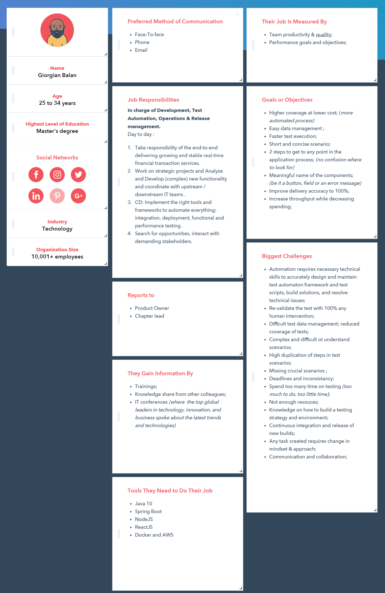

M4 - UX
Team M4: Andreea Alistar & Andrei Crividenco & Cirimpei Dumitru & Eugen Draguteanu
1. Perform at least 3 face-to-face interviews with potential users (from your main targeted customer segment)
After we performed face-to-face interviews with our potential customers, we concluded that our wishes are:
Saves time and money. Automation testing is faster in execution
Reusability of code. Create one time and execute multiple times with less or no maintenance
Easy reporting. It generates automatic reports after test execution
Easy for compatibility testing. It enables parallel execution in combination of different OS and browser environments
Low cost maintenance. It is cheaper compared to manual testing in a long run
Automated testing is more reliable
Automated testing is more powerful and versatile
It is mostly used for regression testing. Supports execution of repeated test cases
Minimal manual intervention. Test scripts can be run unattended
Maximum coverage. It helps to increase the test coverage
2. Create a user persona (or the main user persona in case of targeting multiple customer segments)
>
3. User stories, use cases and user flows

Ops Engineer: Emil Chiva
- As a user, I want to have a test result reporting to be able to analyze quickly and accurately the test results.
- As a user, I want a cheap but effective application that the effort spent on design/developing and implementing the tests to be substantially less than the time spent on performing manual tests.
- As a user, I want a user-friendly, web-based GUI application that allows me for setting up test plans and managing and customizing test cases, without accessing the call centre for additional support.
- As a user, I want detailed performance testing summary reports displayed in graphs and charts to be able to analyze better the test results.

DevOps Engineer: Andrei Bogdanescu
- As a user, I want to use minimal manual intervention for testing an application.
- As a user, I want a testing framework to be able to organize and manage all the files and to finish all the tasks in a systematic approach.
- As a user, I want to execute test cases to across the all supported browsers.
- As a user, I want to have more than a common language for tests.

DevOps Engineer: Maria Balan
- As a user, I want to run tests 24/7 because I want to see the results when I get back in the morning in the office.
- As a user, I want to use minimum programming skills for the framework.
- As a user, I want the testing requirements to be easy to understand and the application to not have a very complex workflow.
- As a user, I want to reduce the effort needed for detecting issues in the application and re-validate the test without any human intervention.